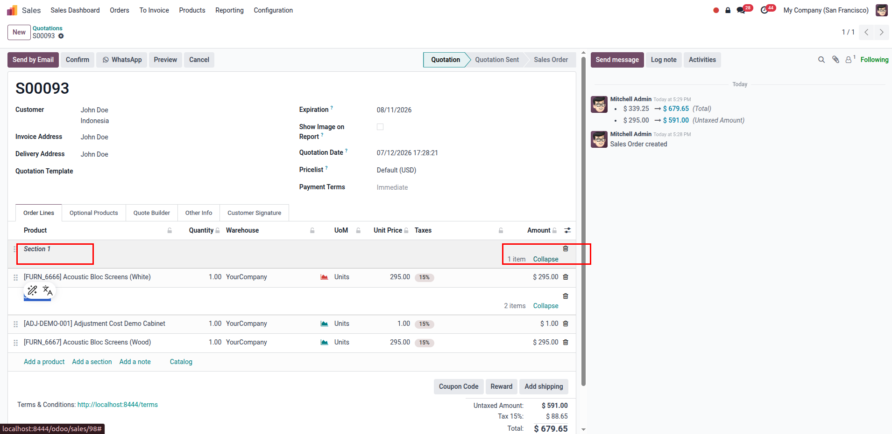
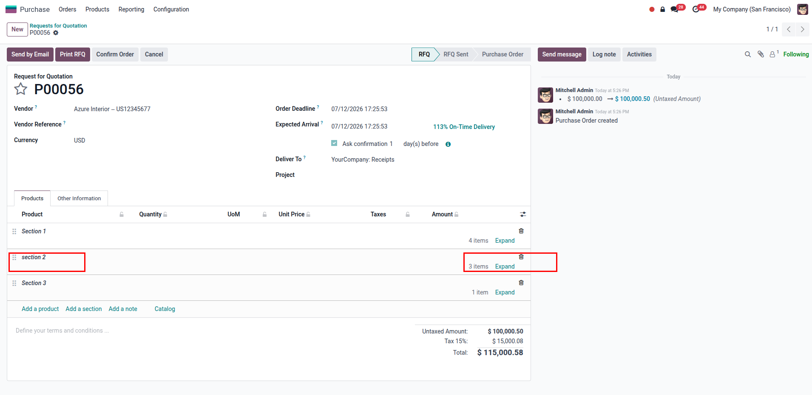
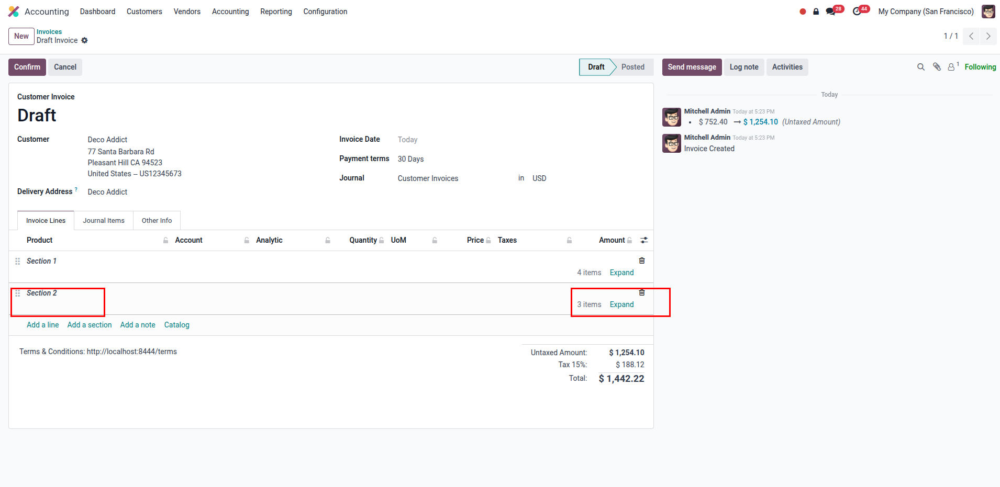

Instantly collapse or expand order lines grouped under any section line in Sales, Purchases, and Invoices.
Shows the count of item lines under each section header dynamically, updating automatically as you add/remove lines.
Remembers collapsed or expanded states within the current browser session, keeping your workspace clean.
Watch how easily you can collapse/expand lines and see automatic item counts across Odoo documents.


